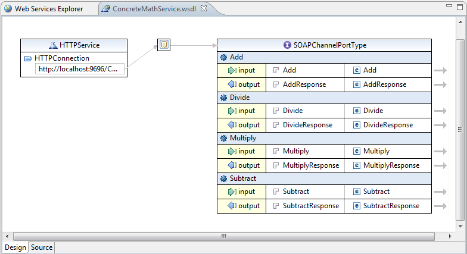
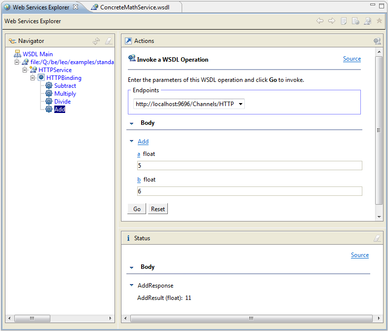

This example demonstrates TIBCO BusinessEvents® implementing a web service: Some TIBCO BusinessEvents RuleFunctions are exposed as operations in a web service, described by a WSDL file. A SOAP client can invoke these operations, passing input parameters and receiving results.
A WSDL file describes the operations available.
For each operation, there is an HTTP destination with a serializer/deserializer set to
com.tibco.cep.driver.http.serializer.SOAPMessageSerializer.
These destinations receive SOAP requests over HTTP, and transform them into SOAPEvent's.
In the CDD, each destination is assigned a preprocessor that implements the matching operation.
Each preprocessor function replies to the incoming event, causing a response to be sent to the client.
In the How to Run the Example section, Web Tools Platform (WTP) is used to provide the SOAP client. This section explains how to check if WTP is already installed, and how to install it.
You don't have to use WTP, however. You can use any client that can work with SOAP over HTTP, such as TIBCO ActiveMatrix BusinessWorks™ or TIBCO® General Interface.
Help > Install New Software....Work with: field, select the option All Available Sites.Hide items that are already installed.Web, XML, Java EE and OSGi Enterprise Development.Web, XML, Java EE and OSGi Enterprise Development, you need to install WTP.Web, XML, Java EE and OSGi Enterprise Development check box, click Next to install the updates. Follow the prompts to complete the installation.The instructions use WTP (see above). If you are using a different SOAP client, adapt the instructions as needed.
Open a command window, and at the command prompt start the TIBCO BusinessEvents engine using the following command.
cd BE_HOME/examples/standard/SOAPChannel BE_HOME/bin/be-engine --propFile BE_HOME/bin/be-engine.tra -u default -c SOAPChannel/Deployments/SOAP.cdd SOAPChannel.ear
Adapt the command as needed, for example if you have customized the example project, or are running it from a different directory.
Import the SOAPClient project from
BE_HOME/examples/standard/SOAPChannel/SOAPClient into TIBCO BusinessEvents Studio.
In the TIBCO BusinessEvents Studio editor, in the SOAPClient project,
open the ConcreteMathService.wsdl file and see the web service structure.

ConcreteMathService.wsdl
and select Web Services > Test with Web Services Explorer.
In Web Services Explorer, expand HTTPBinding and select an operation
(Subtract, Multiply, Divide, or Add). In the Actions panel, provide parameter values as needed.
For example, choose the Add operation,
and provide the parameter values 5 and 6.
Click the Go button to invoke the operation. In the Status panel, you see the returned result.

Note that on the server side, in the command window, you see corresponding messages, such as:
###Getting the first and second value and adding### The first number for addition is =5.0 The second number for addition is =6.0 ###Creating the SoapEventOut### ###The addition of the 2 numbers are=###11.0 ###Printing SOAPEventOut Payload###
The SOAP message also displays for your information.